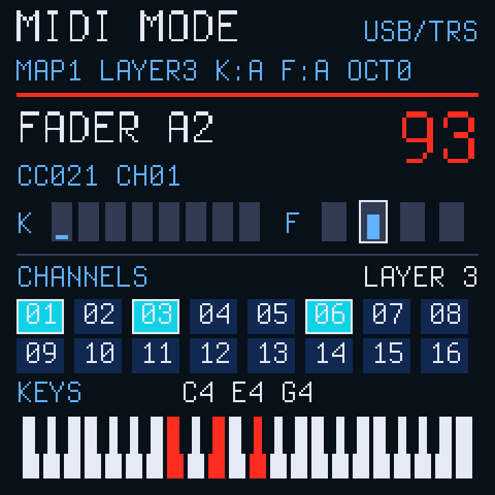
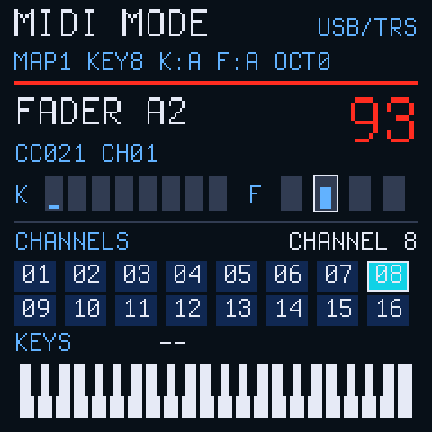

SMKSYNTH · EXPERIMENTAL · PRO / ELITE
MIDI LAYERS ML1
1.2.0-ml1 · identidade 19650 · base oficial 1.2.0
Banco B seleciona os canais do teclado. Combine pads para tocar vários instrumentos em layer.
Como testar
- Entre no MIDI MODE por GLOBE e K1.
- Pressione KNOB BANK + FADER BANK juntos para abrir o banco B: CHANNELS.
- Toque um pad: o teclado usa o canal correspondente, de 1 a 16.
- Segure um pad e toque outros: os canais selecionados ficam iluminados e o layer permanece ao soltar.
- Um novo toque sozinho substitui a seleção por um único canal.
Pitch bend, mod wheel e sustain acompanham o layer por USB e TRS/DIN. Encoders, faders e banco A mantêm seus mapas. Ao trocar a seleção, notas já tocadas recebem Note Off nos canais originais.
Abrir simulador ML1 · Guia e testes


Instalar a experimental
Para quem já usa SMKSYNTH no Pro ou Elite. O modelo é identificado automaticamente; os pacotes são de atualização e preservam os dados. Exporte um backup antes do teste. Primeira instalação a partir da V016 é feita no instalador oficial.
Conferindo pacotes ML1 e retornos oficiais…
Nenhum dispositivo acessado.
Conecte para identificar o modelo e habilitar a operação.
Dados e retomada
A seleção de canais fica ativa ao trocar o banco de pads. Ao sair e voltar ao MIDI MODE ou trocar de mapa, começa no canal principal do mapa. A seleção do layer ainda não é salva. BT continua salvando os mapas; o banco B é fixo nesta experimental.
O sustain libera também os canais visitados enquanto o pedal ficou pressionado. GLOBE + PLAY mantém o MIDI PANIC. Layers grandes aumentam a quantidade de mensagens na saída TRS; o timing real precisa ser avaliado no instrumento.
Se uma transferência antiga ficou pendente, conclua pelo instalador que a iniciou: MO1a e versões anteriores. Não troque de pacote durante a retomada.
Arquivos
ML1 Pro · ML1 Elite · SHA-256 dos pacotes · Fontes correspondentes · Oficial 1.2.0